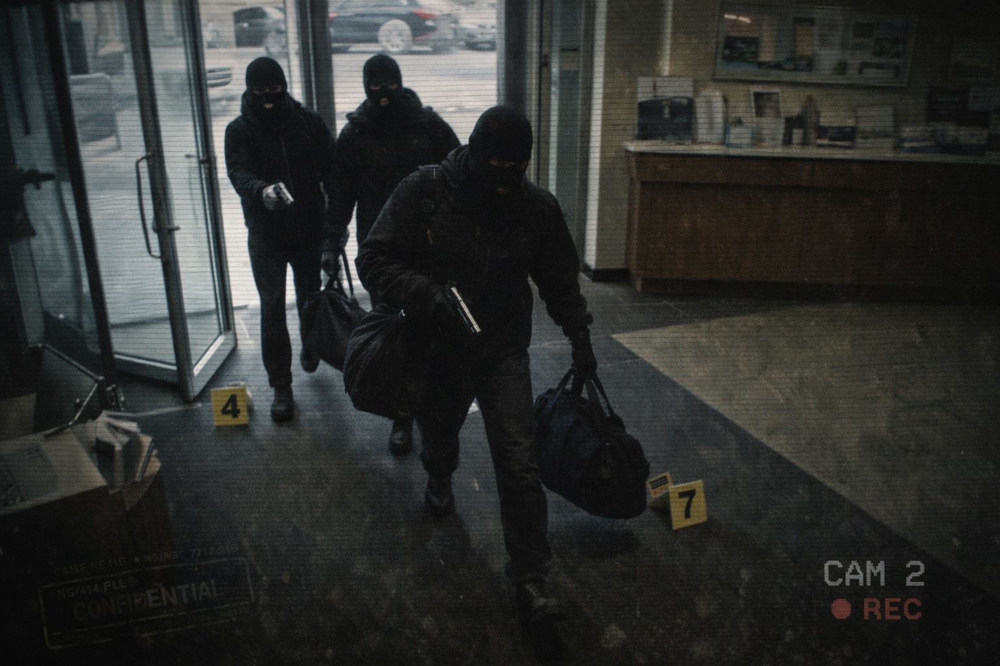

“To Apply the Law or Not Apply the Law?”
This was the question facing the courts in the light of the ruling in ex parte Briggs (No. 2). In college, lectures are premised upon the law being robust and independently applied, but on the ground there are powerful forces at work to ensure the State’s voices reign supreme.
I now regale you with three examples from Magistrates Courts as far afield as Buxton, Wigan and Grimsby, which demonstrate the varied ways the courts grappled with Custody Time Limits (CTL) law.
Michael Hulme was a Cat A prisoner (High Risk) housed in HMP Strangeways, Manchester, charged with a number of armed robberies in the North West. He and his fellow ‘blaggers’ (by the 90s, indigenous to Salford!) were facing a ‘conspiracy to rob’ involving ten raids targeting commercial properties where large amounts of cash were held. CCTV had captured images of the gang and Michael was cited as the balaclava-ed robber brandishing a sawn-off shot gun.
Michael had sacked his local Manchester lawyers in favour of the man nailing the CPS on the topic of “due expedition”. His case was still in the Magistrates court, and I waited with anticipation for the late service of the case papers.
The CPS did not disappoint. Neither they nor the police had altered their working practices. The boxes of papers landed on my desk on the 63rd day.
Three days later, I sat in court room number one in Salford Magistrates waiting for R v Hulme to be ‘called on’. My heart sank when I spotted that, sitting in judgment, would be a stipendiary magistrate, not a lay bench. ‘Stipes’ are ex-solicitors well versed in the criminal law. They sit in major city Magistrates Courts, as they ensure the speedy disposal of cases. The police favour them as they fear, as in ‘Briggs’, unqualified “judges” can make daft decisions.
Worse was the fact, I knew the stipendiary from my days in Wakefield a decade before. He had been a senior partner in a busy criminal practice in that town. He had only witnessed me grappling with shop thefts and minor assaults. Here, I was instructed in a major NCS case, with a punter brought to court by armed police.
The prosecutor accepted my application for a two week adjournment to consider and take instructions on the recently served papers. He asserted it being ‘my’ request the CTL could be extended beyond the 70th day by the court. He was five minutes into his application, which centred upon the gravity of the offending and the number of the offences, when he was confronted with the ‘judge’ waving a piece of paper at him.
‘What about Mr Green’s law?’
I could hardly believe my ears. I had come a long way since my college days. I was no longer learning the law, but changing it - not in stuffy textbooks, but at the coalface in gangland crime. He was waving the report of ex parte Briggs (No. 2), which had been published recently in The Times.
The Stipe attempted to assist the prosecutor as to the Crown’s duties, which seemed to him to have gone up in smoke.
‘How have you failed to serve any papers on the defence before the 63rd day?’
The stuttering which followed made the stipendiary agree to stand the case down for 15 minutes. The prosecutor could brush up on English law and speak to the senior investigating officer (SIO), who was seated at the back of the court.
15 minutes later, the prosecutor fell on his sword. He accepted neither the police nor the Crown had acted with “due expedition”. He abandoned his request for an extension to the CTL and agreed bail with conditions for Mr Hulme.
He faced one more indignity. He had requested the court to ask for a £20k security from my client - this amount of cash to be lodged with the court before Michael’s release, which he would forfeit if he went on the run.
‘Sir’ I announced, rising to my feet, ‘I have no objection to a curfew nor to my client reporting daily to Salford police station. However, a court has no power to impose a condition which would halt Mr Hulme’s immediate release.’
There was a pause, before the stipendiary confirmed, ‘I agree, Mr Green – bail is automatic now the CTL has not been extended. I cannot place a pre-release condition on your client’s bail.’
Within minutes, Michael was breathing fresh air and shocked he was heading home. The armed escort would limp back to Strangeways without its prisoner.
The NCS were not prepared to permit this outrage. Within 24 hours, they hatched a plan which resulted in the re-arrest of Mr Hulme. The new arrest was not for some other misdemeanour occurring since he had walked out of Salford Magistrates, but related to a robbery at Buxton Post Office 15 months before. A new 70 day custody time limit attached to this new charge – they had outflanked and shafted the Blackpudlian.
I smiled at their audacity, and of all places to pop Hulme into, they had chosen the landed-gentry country around Chatsworth House. I sensed the magistrates, chosen to protect and defend Buxton and its environs, would not take kindly to a balaclava-clad Salfordian clutching a sawn-off shot gun in their local post office!
On my drive into the countryside towards Buxton, I prepared my address to the court. I would not insult the court with a request for bail under the Bail Act. After all, how could the charging of yet another robbery make Hulme a candidate for bail? I would, rather, state the application for remand in custody was abusive and was no more than an attempt at a second bite of the cherry by the NCS.
I knew upper and middle class ‘white folk’ would not like to be seen as the police’s “bitches”. They were not appointed to rubberstamp police indiscretions, nor were they (like Leeds Magistrates in Briggs) without authority or power.
I ensured I sat quietly in court, smiling at the court clerk and confirming to the Chairman of the Bench I was content for the prosecutor to await further instructions from the police. Equally, I did not warn the prosecutor as to the ‘blagging’ I would be executing, once he had made his application for a remand in custody.
The case was duly called on and, typically, the police had not relayed the true history of Hulme to the Crown Prosecutor. It was an abridged version, which failed to dwell on the findings of the Stipe in Salford.
I rose to my feet, and opened with, ‘Can I make one matter crystal clear. I do not care about Mr Hulme, but… I do care about the rule of law.’
There was an intake of breath in the court room. Michael‘s head popped up over the dock, as he feared his newly appointed lawyer had either gone rogue or joined the local Freemasons. I then set about nailing the NCS. Such was their disdain for these three magistrates, they had not even brought Mr Hulme to court with an armed escort. ‘They believe it is a done deal. They have outflanked the rule of law.’
I could tell, by the look in the Chairman‘s eyes, he had forgotten all about Hulme and his alleged presence in his local post office. He was gunning for the police. I exonerated the local prosecutor, who, I stated, had been misled by the NCS when they sent him the details of the case.
‘So’, I summed up, ‘I do not insult you by asking you to grant bail under the Bail Act – I simply ask you to endorse the conditions imposed by the Stipendiary Magistrate when he refused to extend the CTL. To do otherwise would be improper. The recent activity by the NCS has been abusive and lowers the standards we are all, correctly, subjected to when conducting criminal cases.’
Within 10 minutes, the three magistrates returned into court. The Chairman asked my client to stand, and announced with gusto:
‘Mr Hulme – we will not be remanding you in custody. We will impose the same conditions on your bail that currently exist in the Salford case.’
Wow! The court had, correctly, identified the upholding of the rule of law as sacrosanct and not to be flouted capriciously. Michael, sitting with me in Buxton’s fish and chip shop minutes later, was reeling from recent events.
‘Fucking hell, Nick…you battered them.’
Page 1 of 1